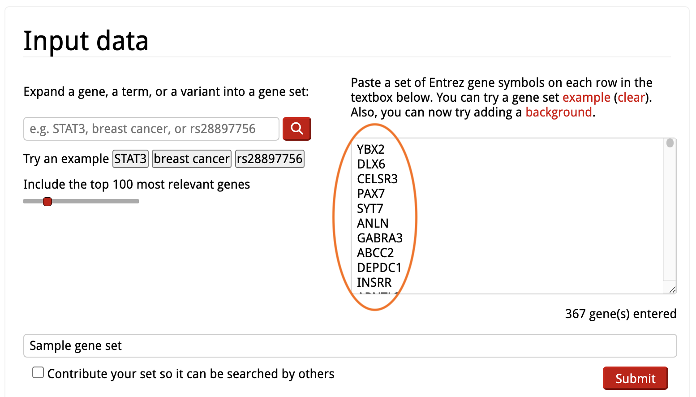
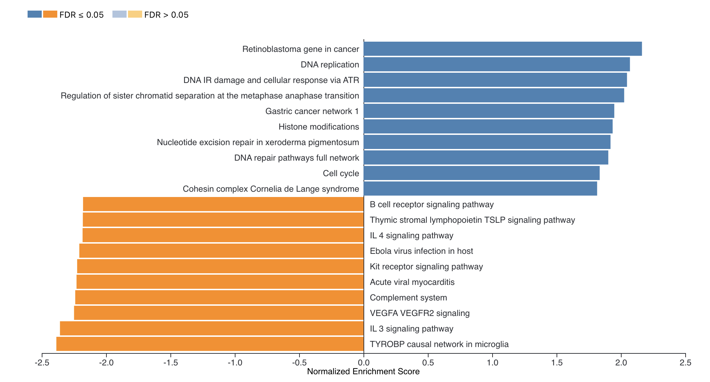

Functional Enrichment Analysis
This protocol is designed as a walk-through tour of popular functional enrichment analysis tools and describes the use of three functional enrichment tools:
Example Data - TCGA lung cancer study
This tour can be used with your own data, or with an example dataset. This page describes a dataset from a TCGA lung cancer study, and compares the expression of transcripts in lung cancer biopses versus normal tissue. The data was processed to produce the example files:
- Calculate log2 fold change and adjusted pvalue for cancer vs normal per gene from group average expression values.
- Filter for significantly up-regulated genes: log2 fold change => 2 AND adjusted pvalue <= 0.05;
list of 367 up-regulated genes (NCBI gene symbol) . Download data. - Filter for significantly down-regulated genes: log2 fold change <= -2 AND adjusted pvalue <= 0.05;
list of 516 down-regulated genes (NCBI gene symbol) . Download data. - Gene ranking calculated for all genes using sign(log2 fold change) * -log10(pvalue);
file with Ensembl gene id and rank value for all genes . Download data.
These input files can be used for ORA and GSEA analysis in Enrichr and WebGestalt.


Example Data - Pinto et al. SARS-CoV-2 study
The Pinto et al study is a multi-OMICs study of SARS-CoV-2 host responses in lung epithelial cells. The data files below were adapted from the supplementary data files provided with the publication, which were already pre-filtered.
- Differentially regulated transcripts identified in cells infected with SARS-CoV2;
list of 2656 genes (NCBI gene symbol) . Download data. - Differentially expressed proteins identified in cells infected with SARS-CoV2;
list of 225 proteins . Download data with Uniprot identifiers / Download data with NCBI gene symbols.
These input files can be used for ORA analysis in Enrichr and WebGestalt.

Example Data - Voineagu et al. autism study
The Voineagu et al. study compares the transcriptome between autistic and normal brain, and was downloaded from Expression Atlas. It contains data for all genes measured with the following comma-separated columns:
- NCBI gene symbol
- fold change
- p value

This input is used for ORA and GSEA analysis in the
Enrichr
The Enrichr tool offers an easy-to-use interface for basic Over-Representation Analysis (ORA) for a large number of gene set libraries.
Before starting analysis, you can browse the available gene sets under
Enrichr: Gene Set Libraries
Enrichr includes over 200 gene set libraries, including Gene Ontology terms, pathways, disease-associated sets, cell type markers etc.
You can also search for gene sets either by the term name under

Enrichr: Start Analysis
Analysis is started by simply copying the list of genes from an input text file into the input box on the right of the
Note that this corresponds to the example TCGA example data file containing up-regulated genes.
Enrichr: Results Overview
The results are displayed as a grid of libraries for each functional category (at the top), the image below shows the results in the

Clicking on one of the squares will show the detailed results for that library:
Enrichr: Gene Set Results
Looking at the results for a specific library in detail, the gene sets are sorted by p-value ranking by default. Clicking on any of the bars representing gene sets re-sorts the bar graph by the different score.

Enrichr: Save Results
To download an image of the bar chart, click either of the

Enrichr: Table View
In addition to the default bar chart, results are also available as a table under
At the bottom of the table there is a link to
WebGestalt
WebGestalt offers more advanced analysis options for a smaller number of gene set libraries. Using WebGestalt, it is possible to run either Over-Representation Analysis (ORA), Gene Set Enrichment Analysis (GSEA) or Network Topology-based Analysis (TNA).
WebGestalt: Data source
WebGestalt data sources are listed under


WebGestalt: Start Analysis
To start analysis, the
WebGestalt: Start Analysis
The input data is defined in the
Clicking

WebGestalt: Results Summary
The top of the results page includes a job summary and a link to download the full results.

WebGestalt: Enrichment Results
Results are displayed as a bar chart by default. Right-clicking on the bar chart lets you download in either
Clicking on the bars updates the pathway-specific display at the bottom of the page.

WebGestalt: Enrichment Results
The results specific to a gene set (pathway in this case) include the scoring statistics calculated for the enrichment, including the enrichment score, a sortable table and the enrichment plot.
The enrichment plot is described in detail here. Briefly, the plot in the upper half represents the running enrichment score (ES), as the analysis walks down the ranked list of genes (bottom section), starting at the most highly ranked gene. When a gene in the pathway is in the ranked list, the score goes up, and when it’s not it goes down. The corresponding overlap between the ranked list and the gene set is indicated by a line in the middle section. The top score in the enrichment map plot is the score reported for the particular gene set.

WebGestalt: Enrichment Results
For WikiPathways results, the link in the upper left is clickable and will open a pathway view with the overlapping/leading edge genes highlighted.

WebGestalt: Enrichment Results
In addition to the bar chart, the main results overview can also be visualized as a table or volcano plot by clicking the
The volcano plot has options for customized downloads available, as well as pan/zoom controls.


Interactive Enrichment Analysis
Interactive Enrichment Analysis is a user-friendly interactive tool to perform enrichment analysis for multiple datasets across multiple public databases. This tool can run both Over-Representation Analysis(ORA) and Gene Set Enrichment Analysis (GSEA).

Interactive Enrichment Analysis: Database
A set of public database collections is provided in the drop-down in the
Once a database collection is selected, the specific databases contained in the collection will be displayed.

Interactive Enrichment Analysis: Datasets
Datasets are selected in the

Interactive Enrichment Analysis: Dataset Options
The tool will display a preview of the first few rows of the first chosen dataset along with the required and optional columns that were detected.


Interactive Enrichment Analysis: Start Analysis
When
Once analysis is started, the initial set of panels will collapse and a

Interactive Enrichment Analysis: View Results
Analysis results can be viewed by clicking
In the results app, the


Interactive Enrichment Analysis: Data plots
The input data is visualized in a volcano plot, which plots genes by statistical significance, p.value, versus magnitude of change, fold.change. Genes are highlighted based on the p.value and fold-change cutoffs selected during setup. Selected genes are labeled; select genes either by top n genes, or by selection by name.
A bar plot of your input data is also available (via a drop-down), highlighting positive and negative fold-change values for a subset of genes, either top n genes or genes selected by name.


Interactive Enrichment Analysis: Analysis Results
The
The table and plots can all be downloaded.


Interactive Enrichment Analysis: Analysis Results
Using the left side panel, one can navigate between GSEA and ORA methods while viewing the results for a particular database to explore hits in common (and unique) to the different methods. Here we are comparing the ORA and GSEA results for the WikiPathways database, note the differences in the table and dot plot.


Interactive Enrichment Analysis: Dot plot
A

Interactive Enrichment Analysis: Overlapping genes
Several plot types are available for visualizing the gene overlap between results.


Interactive Enrichment Analysis: GSEA plot
For each result in the results table, results-specific plots are available based on the database the results is from and the analysis method used. For example, for GSEA analysis, the GSEA Enrichment Score plot is available. As described earlier, the plot in the upper half represents the running enrichment score (ES), as the analysis walks down the ranked list of genes. The middle section shows where the members of the gene set appear in the ranked list of genes. The top score in the enrichment map plot is the score reported for the particular gene set.

Interactive Enrichment Analysis: Pathway plot
Some database-specific visualizations are also available, for example WikiPathways visualizations of the data on models from the WikiPathways database. Genes that met the criteria for fold change and p value cutoff are highlighted in the pathway (orange for up, blue for down). The WikiPathways button will take you to the pathway model at WikiPathways.

Opening the pathway in a new window gives you access to a larger, interactive format of the pathway.

Functional Enrichment Analysis: Downstream analysis
Once you have completed exploring your data and results in either of these tools, there are several options for continued analysis and exploration:
- Create custom pathway visualizations of your data in Cytoscape.
- Explore network visualization and analysis in Cytoscape.
- Extend pathways with regulatory interactions using CyTargetLinker.
- Create pathway models relevant to your research, or modify existing models, with PathVisio and WikiPathways.